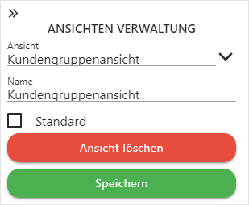

Power Report - Hauptmenü - Ansichten Verwaltung
Durch Anwahl des Eintrag "Ansichten Verwaltung" aus dem Power Report - Navigation eines Power Report - Widgets - Olap der Bereich zur Verwaltung von Ansichten geöffnet.

Ø Ansicht
Über eine Auswahlliste kann die Ansicht, welche editiert werden soll, ausgewählt werden.
Ø Name
An dieser Stelle kann der Name der Ansicht geändert werden.
Ø Standard
Durch Aktivierung dieser Option wird die Ansicht beim Start des Power Reports im Olap automatisch angezeigt.
Hinweis
Es kann immer nur eine Standardansicht pro Olap geben.
Buttons
Ø Ansicht löschen
Durch Anwahl des Buttons "Ansicht löschen" wird die ausgewählte Ansicht gelöscht.
Ø  Speichern
Speichern
Mit Hilfe des Buttons "Speichern" wird die Ansicht gespeichert.